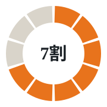

目標・成長
FIRST LIVE GROWTH SYSTEM｜はじめてのLIVE攻略作戦室初心者のLIVEは、最初の動き方で変わる。
- 原本：【初回ガイド】初動編
最初の15分で反応をつくる。30分で展開を変える。そして、また会いたいと思われる配信へ。
原案の3つのメッセージ
- 15分1.5Kいいね
- 30分1回のMatchを検討
- 7割ギフトはバトル中（原案の見立て）
初動は、視聴者が来るのを待つ時間ではない。
自分からLIVEの流れをつくる時間だ。
配信を始めても、何をすればいいか分からない
こんなことで迷っていませんか。
- 最初の数分に何を話せばよいかわからない
- コメントが来るのを待ってしまう
- Matchの始め方がわからない
- ギフトリアクションが苦手
- 次回来てくれるファンが育たない
初動で大切なのは、ただ待つことではありません。配信を始めた瞬間から、自分で流れをつくることです。
最初の15分・30分ごとのMatch・コミュニケーションを、1回の配信の運営プランにします。架空のライバーミオさんと一緒に、作戦室で練習しましょう。
読み終えると、こんな状態へ
最初の15分の台本があり、コメントへの返し方がわかり、Matchの流れを説明でき、90分の進行表と7日間の実践計画ができています。
たとえば、ミオさん（架空）の次の配信。
- 最初の5分を無言で待たず、用意した話題から話し始める。
- 30分たったところで「このあとMatchに挑戦します！」。相手が見つからなければ、クイズに切り替える。
- 最後に次回の予定を伝え、配信後に今日の振り返りを書く。
「視聴者が来るのを待つライバー」から、「自分でLIVEの流れをつくり、ファンとの関係を育てられるライバー」へ。
このページで進む道
- 3つの数字
- 3本柱と2大目標
- 名前・コメント・リアクション
- 最初の15分
- 30分Match
- 90分の進行
- ファンとの関係と7日間
- 私の初動攻略プラン
攻略ノート
このコンテンツで学べること

初動の3本柱
配信頻度・バトル頻度・コミュニケーション＆リアクション。
LIVEに効く理由配信中にやることが明確になります。
だから迷わず動ける
最初の15分
挨拶から参加案内までの5区間。
LIVEに効く理由コメントを待たずに流れをつくれます。
だから静かな時間が減る
30分Matchと90分
Matchの流れと、通常配信との使い分け。
LIVEに効く理由配信に変化と交流が生まれます。
だから一体感が育つ
7日間の実践
7つの挑戦と、私の初動攻略プラン。
LIVEに効く理由読むだけで終わらず改善できます。
だから続けて伸びる
学んだ先に変わること
- 配信者がすること最初の15分の台本がある
- コメントを会話に変えられる
- LIVEMatchと通常配信を使い分けられる
- 視聴者視聴者が「また来たい」と感じる時間が増える
- その先7日間ごとに改善を積み重ねる
待つ配信から、流れをつくる配信へ。
15分・1.5K・30分・7割などは、初回ガイドの原案にある運用の目安と見立てです。成果を保証するものではありません。
このページの最後に、「MY FIRST LIVE GROWTH PLAN｜私の初動攻略プラン」を書きます。
3つの数字と、はじめてのLIVE攻略作戦室
15分
1.5Kいいね
初速の参加を意識する。
原案の運用目安30分
1回のMatchを検討
配信へ変化をつくる。
原案の運用目安7割
ギフトはバトル中という原案の見立て
Matchの役割を理解する。
原案で紹介された見立て・確定統計ではない
3つの数字は、初回ガイドの原案にある運用の目安と見立てです。TikTokが保証する条件や、市場全体の確定した統計ではありません。
LIVEを始めたのに、誰もコメントしてくれない。何を話せばよいかわからず、静かな時間が続いてしまう。そんなとき、視聴者が来るまで待っていませんか？
初動で大切なのは、ただ待つことではありません。配信を始めた瞬間から、自分で流れをつくることです。
最初の15分で1.5Kいいねを狙う。30分に1回を目安にMatchを考える。視聴者の名前を呼び、コメントを会話へ変え、応援に感謝する。
この3つを意識するだけでも、配信中にやるべきことが明確になります。まずは、次のLIVEで実践できることをひとつ決めましょう。
ミオさん（架空）の初動ストーリー
- SCENE 1初配信。コメントが少なく、何を話してよいかわからない。
- SCENE 2配信習慣・Match・コミュニケーション＆リアクションの3本柱を学ぶ。
- SCENE 31.5Kいいねを意識して、最初から話題を用意する。
- SCENE 430分を目安に、初めてのMatchを検討する。
- SCENE 5視聴者の名前を呼び、コメントに質問を返す。
- SCENE 6応援してくれた人へ、自分らしく感謝を伝える。
- SCENE 7次回の予定を伝えて、振り返る。
ミオさんは、映画とカフェが好きな、少し緊張しやすい架空のライバーです。最初から上手にできる必要はありません。毎回、目的を持って練習することで、成長につながる行動を積み重ねられます。
まずは、初動を支える3本柱から。
初動の3本柱・2大目標・ファン獲得の8施策
図解01FIRST LIVE FOUNDATION｜初動を支える3本柱
「配信頻度」「バトル頻度」「コミュニケーション＆リアクション」が、初動の土台。
LIVE
GOAL｜最初のファンと出会い、関係を育てる
柱を押すと、重要性・実践例・今日の行動が出ます。
配信頻度
なぜ大切： 予定がわかる・何度か見てもらう・人柄を知ってもらう・次回も訪れるきっかけができる。
実践例： 「毎週月・水・金の21時から」と決めて、プロフィールと配信の最後で伝える。
今日の行動： 続けられる配信の曜日と時刻を決める。
バトル頻度
なぜ大切： 普段と違う展開をつくる・ほかのライバーと交流する・視聴者と同じ挑戦を楽しむ。
実践例： 30分を目安に「このあとMatchに挑戦します！」と予告する。
今日の行動： Matchの申請画面がどこにあるか確かめる。
コミュニケーション＆リアクション
なぜ大切： 名前を呼ぶ・コメントに返す・会話を広げる・感情を表現する・応援へ感謝する。
実践例： 「○○さん、こんばんは！ 今は好きな音楽の話をしています」。
今日の行動： 初見歓迎の一言を3種類用意する。
初動の2大目標
GOAL A｜配信の習慣付け
初心者にとって大切なのは、継続して会える機会をつくることです。好きなカフェでも、いつ営業しているのかわからなければ通いにくいですよね。LIVEも同じです。いつ配信しているかがわかると、視聴者は予定を立てやすくなります。
- 週5日
- 1日2時間以上
- 月60時間
3つは原案にある別々の活動目安です。週5日・1日2時間で運営しても、それだけで月60時間になるわけではありません。月60時間を目指すなら、それとして配信予定を立てます。
ACTIONいまの生活で、続けられる配信予定を決める。
GOAL B｜コアファンの獲得
コアファンとは、本人の活動を続けて楽しみ、自分の意思で応援してくれる人です。応援には、視聴・コメント・いいね・シェア・フォロー・ギフトなど、さまざまな形があります。
中心メッセージ新しい視聴者を迎えることと、また来たくなる体験をつくることを、両方大切にする。
補助図解ファン獲得の8施策
LIVE中の4施策
- 01名前を呼ぶ見に来てくれた人を歓迎する。
- 02コメントを会話へ変える読むだけで終わらず、質問を返す。
- 03感情を表現する喜びや驚きを本人らしく伝える。
- 04応援に感謝するギフトだけでなく、いいねやコメントにも反応する。
また来たい
LIVE外の4施策
- 05SNSを連携させる活動しているSNSからLIVE予定を知らせる。
- 06配信時間を固定する次にいつ会えるかを伝える。
- 07参加するきっかけをつくるLIVE企画や告知で、興味を持つ理由をつくる。
- 08必要に応じてDMで感謝する歓迎される範囲で、配信後のお礼を届ける。
初心者はここから最初から8つすべてを実行しなくて大丈夫。まずは名前を呼ぶ・コメントを拾う・しっかり反応するの3つから。
次は、配信中の会話とリアクションを練習します。
名前を呼ぶ・コメントを会話に・自分らしく感謝する
名前を呼ぶ
BAD入室者に気づかず、無言の状態が続く。
BETTER「○○さん、こんばんは！ 来てくれてありがとうございます」
TOP-LIVER「○○さん、こんばんは！ 今は好きな音楽の話をしています。よかったらゆっくりしていってください」
名前を呼ぶ。今の話題を伝える。参加するかどうかは視聴者の自由にする。
自分の言葉で書く
書いた内容は、このブラウザの中だけに保存されます
図解05COMMENT RALLY｜コメントを会話へ変える
コメントは、読むだけで終わらせない。
- コメントを拾う
- 反応する
- 質問を返す
- 全体の話題にする
1. 視聴者のコメントを選ぶ
2. 返答のレベルを選ぶ
両方を選ぶと、見本が出ます。
初見です！ × LEVEL 1｜読むだけ「初見さん、いらっしゃい！」
初見です！ × LEVEL 2｜質問を返す「初見さん、こんばんは！ 来てくれてうれしいです。どこで見つけてくれましたか？」
初見です！ × LEVEL 3｜全体へ広げる「初見さん、こんばんは！ 今日は最近ハマっているものの話をしています。見るだけでも歓迎ですよ！」
好きな音楽は？ × LEVEL 1｜読むだけ「Kポップです」
好きな音楽は？ × LEVEL 2｜質問を返す「Kポップです！ 最近は○○を聴いています。○○さんは何を聴きますか？」
好きな音楽は？ × LEVEL 3｜全体へ広げる「最近はKポップを聴いています。みんなは何を聴く？ おすすめがあれば教えてください」
今日は何の話？ × LEVEL 1｜読むだけ「雑談です」
今日は何の話？ × LEVEL 2｜質問を返す「今日は雑談です！ ○○さんは最近、何か買ってよかったものありますか？」
今日は何の話？ × LEVEL 3｜全体へ広げる「今日は最近買ってよかったものの話です。今はカフェグッズの話をしています。みんなのおすすめも聞きたいな」
LEVEL 1・2 の例は、このサイトで作った見本です。LEVEL 3 は原案の例です。
自分の言葉で書く
書いた内容は、このブラウザの中だけに保存されます
合格3つのコメントそれぞれに、自分らしい返答をひとつ作れたら合格。
図解06REACTION STUDIO｜自分らしい感謝の伝え方
盛り上がりは、配信者の感情表現から生まれる。
BADギフトが来ても、ほとんど反応しない。
BETTER「○○さん、ありがとうございます！」
TOP-LIVER「えっ、○○さんありがとう！ 本当にびっくりした！ 応援してもらえてうれしいです」
- 元気系声や表情で喜びを伝える
- 落ち着き系丁寧な言葉と表情で感謝する
- ユーモア系本人らしい楽しい反応で盛り上げる
1. スタイルを選ぶ
2. 場面を選ぶ
両方を選ぶと、見本が出ます。
元気系 × 初見が来た「初見さん来たー！ こんばんは、めっちゃうれしい！」
元気系 × コメントをもらった「コメントありがとう！ それ分かる、私もそう！」
元気系 × ギフトをもらった「えっ、○○さんありがとう！ 本当にびっくりした！ うれしい！」
落ち着き系 × 初見が来た「初見さん、こんばんは。来てくださってありがとうございます。ゆっくりしていってくださいね」
落ち着き系 × コメントをもらった「コメントありがとうございます。そう言ってもらえるとうれしいです」
落ち着き系 × ギフトをもらった「○○さん、ありがとうございます。じわじわうれしさが来ています」
ユーモア系 × 初見が来た「初見さん！ ちょうど今、私がカフェで迷子になった話をしてました（笑）」
ユーモア系 × コメントをもらった「そのコメント、今日いちばん笑った（笑）。ありがとう！」
ユーモア系 × ギフトをもらった「○○さん、ありがとう！ 驚きすぎて今の話を全部忘れました（笑）」
ギフトを送らない視聴者も大切にします。大きなリアクションだけが正解ではありません。セリフはすべて例です。
自分の言葉で書く
書いた内容は、このブラウザの中だけに保存されます
視聴者の参加を促す
参加方法がわかると、視聴者は行動を選びやすくなる。
- 「楽しんでもらえたら、いいねやコメントで反応してくれるとうれしいです！」
- 「次回の予定も知りたい方は、フォローしてもらえるとうれしいです」
- 「今日の企画を応援したい方は、LIVEゴールも設定しているので、よかったら見てみてください」
有料の応援を強制しない。視聴者の罪悪感を利用した要求をしない。高額のギフトを送る人だけを大切にする演出をしない。
自分の言葉で書く
書いた内容は、このブラウザの中だけに保存されます
話し方の準備ができたら、最初の15分を設計します。
最初の15分で1.5Kいいねを狙え！
図解02FIRST 15 MINUTES｜最初の15分作戦
最初の15分で1.5Kいいねを狙え！
原案の運用目安配信が始まってから何を話すか考えるのではありません。開始する前に、最初の15分を準備しておく。
最初の5分に行うこと
- 何のLIVEか伝える（今の話題を説明する）
- 自分から話す（コメントが来なくても進行できるようにする）
- 初見を歓迎する（新しく来た人へも、今の状況を伝える）
合言葉最初の5分を、無言で待たない。
15分1.5Kいいね原案の運用目安
- 0:00〜1:00
- 1:00〜3:00
- 3:00〜5:00
- 5:00〜10:00
- 10:00〜15:00
待つのではなく、流れをつくる。
時間帯を押すと、すること・見本のセリフが出ます。
0:00〜1:00｜挨拶
挨拶して、今日の話題を伝える。
見本のセリフ「こんばんは！ 今日もよろしくお願いします。今日は○○について話していきます」
1:00〜3:00｜最初の話題
コメントを待たず、本人から話を始める。
見本のセリフ「最近、映画を観に行ったんですけど……」
3:00〜5:00｜コメントの入口
答えやすい質問で、コメントの入口をつくる。
見本のセリフ「最近○○にハマっているんですが、みんなはどうですか？」
5:00〜10:00｜会話を広げる
コメントを拾う・名前を呼ぶ・自然に質問を返す。
見本のセリフ「○○さん、それいいですね！ 私も気になってました。どこで見つけたんですか？」
10:00〜15:00｜参加のきっかけ
いいねの自然な案内と、このあとの企画の紹介。
見本のセリフ「楽しんでもらえたら、いいねで反応してくれるとうれしいです！ このあと30分くらいでMatchにも挑戦します」
15 MIN / 1.5K LIKES
1.5Kは原案の運用目標です。届かなくても失敗ではありません。目標に向けて、どんな運営の行動ができたかを振り返ります。
LIVEゴールの役割
今日の目標を、視聴者へ見える形で伝える。
- 1ハートミー
- 2中程度のギフト
- 3さらに上のギフト
LIVEゴールは、今日何を目指しているかを視聴者へ伝える仕組みです。設定する前に、何を目指したいか・なぜその目標なのか・達成したら何を楽しむのかを考えます。通常配信での応援と、Match中の応援は、違う場面の体験として整理します。
原案は3段階の考え方だけを示しています。コイン数や個数は書かれていないため、ここでも決めていません。
ACTION自分がLIVEゴールを使う目的を一文で書く。
ワークショップ
最初の15分の台本
5区間すべてに自分の言葉を書けたら完成。このブラウザの中だけに保存されます。
0:00〜15:00 を自分の言葉で
私の最初の15分
- 0:00〜1:00
- 1:00〜3:00
- 3:00〜5:00
- 5:00〜10:00
- 10:00〜15:00
書いた内容は、このブラウザの中だけに保存されます
15分の作戦ができたら、30分ごとのMatchへ。
30分に1回のMatchと、ギフト7割の考え方
図解03LIVE RHYTHM｜30分ごとの運営チェック
30分に1回のバトルを、基本の運営リズムに。
原案の運用目安30分ごとを目安に、Matchで展開を変えることを考えます。通常配信 → 交流 → 対戦 → 感謝、のリズムを意識します。ただし、30分たったら必ず対戦を始められるわけではありません。相手の都合・配信の企画・自分の状況に合わせて判断します。
- 0分
- 30分
- 60分
- 90分
節目を押すと、検討すること・一言・代替案が出ます。
0分｜LIVEスタート
検討すること： 最初の15分の作戦どおり、挨拶・話題・コメントの入口をつくる。
準備する一言： 「今日は○○の話と、30分くらいでMatchにも挑戦します！」
代替案： 人が少なくても、自分の話を続ける。
30分｜Matchを検討
検討すること： 会話の区切り・新しく来た人・自分の余裕を見て、Matchに入るか決める。
準備する一言： 「このあとMatchに挑戦します！ 一緒に楽しんでもらえたらうれしい」
代替案： 話題を変える／短いクイズ／コメントの質問コーナー／次のMatch候補を探す。
60分｜次のMatchを検討
検討すること： 前のMatchの余韻と、通常の会話の盛り上がりを見て、次の展開を決める。
準備する一言： 「さっきの続き、もう一回Matchやってみる？」
代替案： 盛り上がっている話題を続ける／コメント企画へ。
90分｜終了または次の展開へ
検討すること： 感謝と次回の予定を伝えて終えるか、続けるか。
準備する一言： 「今日は来てくれてありがとう！ 次は○曜日の○時からです」
代替案： 続ける場合も、ここで一度感謝を伝える。
30分・60分は、対戦を始める時刻の保証ではありません。前後してかまいません。
図解04MATCH IMPACT｜原案が伝えるMatchの重要性
ギフトの7割はバトル中。だからMatchを軽視するな。

通常配信で育てること
- 人柄を知ってもらう
- 会話を楽しむ
- 関係を育てる
Matchで育てること
- 一緒に挑戦する
- 企画へ変化をつける
- ほかのライバーと交流する
- 応援へ感謝する
「ギフトの7割」は、初回ガイドにある現場の見立てです。いまの市場全体について検証された確定統計ではありません。この図は原案の主張を理解するための模式図で、実際に測った比率のグラフではありません。
Matchでは、制限時間・勝敗・予測できない展開・応援の一体感が生まれます。
最重要通常配信とMatchを、目的に応じて使い分ける。
Matchの5つのメリット
- MERIT 1ギフトが動く機会応援が生まれる場面のひとつとしてMatchを理解する。
- MERIT 2ライバー同士の認知新しいクリエイターとの接点が生まれる。
- MERIT 3視聴者との接点普段とは違う視聴者に知ってもらえる場合がある。
- MERIT 4枠の一体感同じ企画を一緒に楽しみやすい。
- MERIT 5マンネリ化の防止配信の展開に変化をつくれる。
5つすべての成果が必ず得られるわけではありません。Matchを行う目的を考えることが大切です。
図解07FIRST MATCH｜初めてのMatchガイド
ステップを押すと、すること・一言・気を付けることが出ます。
STEP 1｜相手を探す
すること： おすすめの配信者や、交流のある配信者を確認する。
一言： 「今からMatchの相手を探してみます！」
気を付けること： 相手選びに時間をかけすぎない。
STEP 2｜招待する
すること： 利用できるコラボ機能から、相手へ招待を送る。
一言： 「まだ慣れていないので緊張していますが、一緒に楽しんでもらえたらうれしいです」
気を付けること： 断られても普通のこと。
STEP 3｜対戦を始める
すること： 相手が承認し、機能を使える場合にMatchを始める。
一言： 「対戦相手の皆さんも、よろしくお願いします！」
気を付けること： 画面の名前や位置は、いまのアプリで確かめる。
STEP 4｜進行を伝える
すること： 視聴者へ企画を説明する。
一言： 「このあと初めてのMatchに挑戦します！ いいねやコメントでも一緒に楽しんでね」
気を付けること： 点数だけでなく、気持ちと展開を話す。
STEP 5｜感謝する
すること： 勝敗にかかわらず、応援・相手・相手の視聴者へ感謝を伝える。
一言： 「○○さん、応援ありがとうございました！ 対戦相手の○○さん、相手の視聴者の皆さんも、ありがとうございました！」
気を付けること： 負けた理由を視聴者や応援の量に向けない。
相手が承認しなかったとき
相手が承認しなかったときは、通常配信へ戻り、別の企画を続ける。「お、今は難しかったみたい！ じゃあ先にクイズしよう」
この教材から実際のMatch申請はできません。操作はいまのアプリで行います。
Matchの流れがわかったら、90分全体を設計します。
90分LIVEの基本進行
図解0890-MINUTE LIVE｜1回の配信を設計する
MY FIRST 90 MINUTES
- 00:00〜00:15
- 00:15〜00:25
- 00:25〜00:35
- 00:35〜01:00
- 01:00〜01:10
- 01:10〜01:25
- 01:25〜01:30
区間を押すと、目的と使えるセリフが出ます。下の「私の90分LIVE進行表」に書いて完成させます。
00:00〜00:15｜初速
1.5Kいいねを意識。 挨拶・自己紹介・今日の話題・コメント・いいねの自然な案内。
使えるセリフ「こんばんは！ 今日は映画の話をします。楽しんでもらえたら、いいねで反応してね」
00:15〜00:25｜交流
コメントを拾う・質問を返す・初見を歓迎する・次の企画を知らせる。
使えるセリフ「○○さん、初見さんいらっしゃい！ このあとMatchにも挑戦します」
00:25〜00:35｜最初のMatch
30分を目安に検討。相手を探す・対戦する・感謝する。成立しないときは、コメント企画か雑談を続ける。
使えるセリフ「初めてのMatchに挑戦します！ 緊張してるけど一緒に楽しもう」
00:35〜01:00｜通常配信
新しい人と交流する・Matchの話をきっかけに会話する・リアクションを続ける。
使えるセリフ「さっきのMatch、最後ドキドキしたね（笑）。初めての方、普段はこんな雑談をしています」
01:00〜01:10｜次のMatch
もう一度Matchを検討。対戦・交流・感謝。成立しないときは別の企画へ。
使えるセリフ「もう一回いってみよう！ 今度は声かけももっと頑張る」
01:10〜01:25｜通常配信
落ち着いた交流・コメントを広げる・新しく来た人への挨拶。
使えるセリフ「みんなの最近のおすすめ映画、教えてほしいな」
01:25〜01:30｜振り返り・次回予告
感謝・次回の予定・次回の企画。
使えるセリフ「今日もありがとう！ 次は金曜の21時から。今度は映画TOP3の話をします」
この90分は教育用の例です。Matchの時刻は固定ではありません。
ワークショップ
私の90分LIVE進行表
区間ごとに、使うセリフや企画を書きます。Matchの区間は、成立しないときの選び方も決めておきます。このブラウザの中だけに保存されます。
前半（00:00〜01:00）
00:25〜00:35｜最初のMatchの区間
後半（01:00〜01:30）
01:00〜01:10｜次のMatchの区間
私の90分LIVE進行表
- 00:00〜00:15
- 00:15〜00:25
- 00:25〜00:35
- 00:35〜01:00
- 01:00〜01:10
- 01:10〜01:25
- 01:25〜01:30
書いた内容は、このブラウザの中だけに保存されます
配信のあとの関係づくりと、7日間の実践へ。
ファンとの関係を育てる・7日間の実践プラン
補助図解FAN RELATIONSHIP LOOP｜また会いたくなる関係
- A知ってもらうLIVEへ入室する
- B歓迎される名前を呼んでもらう
- C会話するコメントへ反応してもらう
- D楽しむ人柄や企画を楽しむ
- E次も来る予定を知り、また来る
- F応援する視聴・コメント・シェア・フォロー・任意のギフト
- G関係が育つ新しい企画へ参加する
ファンは、一回のテクニックではなく、楽しめる体験の積み重ねで育つ。
すべての人が同じ順番でファンになるわけではありません。関係づくりを理解するための教育モデルです。
配信外の4施策
- SNS連携実際に使っているXやInstagramなどから、LIVE予定を知らせる。
- 配信時間の固定「毎週○曜日の○時」という予定を決める。
- 行動のきっかけ参加しやすい企画や、次回の見どころを伝える。
- 必要に応じたDM連絡を歓迎する視聴者へ感謝を伝える。
DMの例（連絡を歓迎してくれる人へ）「今日も来てくれてありがとうございました！ 一緒に話せて楽しかったです。次回は○曜日に配信する予定なので、都合が合えばまた遊びに来てくださいね」
無差別なDM・迷惑な連絡・個人情報の不適切な利用をしない。配信後のDMを全視聴者へ義務づけない。
Xとメルマガを使っている人へ：ティザーと複数投稿
実際にXを運用している人、購読と配信の同意がある購読者がいる人だけが使う発展施策です。
PATTERN A｜初配信
- ティザー「ついにTikTok LIVEを始めます。ずっとやってみたかったけれど、少し緊張しています」
- 内容紹介「初回は自己紹介と、普段好きなことをゆっくり話そうと思っています」
- 当日案内「今日○時から初配信です。初めてなので不慣れですが、よろしくお願いします」
PATTERN B｜初Match挑戦
- ティザー「次のLIVEで、初めてMatchに挑戦してみます」
- 背景「ずっと緊張して避けていたけど、新しい交流をつくりたくて挑戦することにしました」
- 当日案内「今夜○時から。最初のMatchに挑戦する予定です」
PATTERN C｜1週間の成長記録
- 振り返り「今週はコメントを拾って会話を広げることを意識しました」
- 気づき「ただ読むだけでなく、質問を返すと話が続きやすいと感じました」
- 次回予告「来週はMatchにも挑戦してみます」
メルマガ3通
- MAIL 1挑戦の背景：なぜLIVEを始めるのか
- MAIL 2企画紹介：次回なにを楽しめるのか
- MAIL 3当日の案内：日時・参加方法・見に来てほしい理由
毎回同じ告知を繰り返さず、ストーリーと見どころを少しずつ伝えます。
図解09FIRST 7 STEPS｜最初の7つの挑戦
- DAY 1
- DAY 2
- DAY 3
- DAY 4
- DAY 5
- DAY 6
- DAY 7
日を押すと、目的・やること・メモ・進み具合が出ます（このブラウザに保存）。
DAY 1｜初回準備
プロフィール・配信環境・自己紹介・最初の15分の話題を用意する。
DAY 2｜初速
15分で1.5Kいいねを意識。挨拶・コメント・参加案内。
DAY 3｜コメントラリー
質問を返す。全員が会話へ入りやすい場をつくる。
DAY 4｜リアクション
自分らしい感謝の伝え方を練習する。
DAY 5｜Match
30分に1回の目安を理解する。できる場合は最初のMatchへ挑戦。できない場合は、申請と代わりの企画の計画を作る（それでも次へ進めます）。
DAY 6｜再訪の仕組み
次回の予定・SNSでの案内・必要に応じた感謝のメッセージ。
DAY 7｜振り返り
15分の初速・Match・コメントラリー・リアクション・次回の改善を確かめる。
7日連続でLIVE配信する必要はありません。7つの学習・実践の挑戦として、自分の活動予定に合わせて進めます。
最後に、私の初動攻略プランを書きます。
MY FIRST LIVE GROWTH PLAN｜私の初動攻略プラン
最初の15分・Match・コミュニケーションについて、実際に使える計画を作ります。全部が埋まらなくても、次のLIVEで変えることをひとつ決めれば始められます。
ワークショップ
MY FIRST LIVE GROWTH PLAN
書いた内容は、このブラウザの中だけに保存されます。
PART A｜今週の活動
PART B｜最初の15分
PART C｜30分Match
PART D〜E｜コミュニケーションとリアクション
PART F〜G｜配信後と次の改善
私の初動攻略プラン
- 今週の活動
- 最初の挨拶
- Matchの時間
- 初見歓迎
- 次に変えること
書いた内容は、このブラウザの中だけに保存されます
あわせて学ぶと、もっと深く練習できます。
ファン化・応援につながる理由
知ってもらう → 歓迎される → 会話する → 楽しむ → 次も来る → 応援する → 関係が育つ
最初の15分で迎え、コメントで会話し、Matchで一緒に挑戦し、次回の予定で再会する。ファンは、楽しめる体験の積み重ねで育ちます。
- 歓迎
- 会話
- Match
- 次回
- また来たい
初動攻略で覚える4つ
最初の15分は自分から話題をつくる（1.5Kいいねは原案の目安）
30分を目安にMatchか別の展開を考える
名前を呼ぶ・質問を返す・自分らしく感謝する
最後に次回の予定を伝え、7日間で少しずつ改善する

次の配信で試すこと
できた数 0 / 4
全部試せました。下の「できた目安」を確かめましょう。
できた目安
「最初の15分の台本」の5区間が埋まっていたらOK。
もう一歩90分の進行表を書き、実際の配信で使った。
さらに上7日間の挑戦を自分の予定で進め、Matchか代わりの企画を実行した。
その先初動攻略プランを毎週見直し、次に変えることを決めてくり返している。
配信のあとに見ること
いいねの数だけで決めずに見ます。
次は？